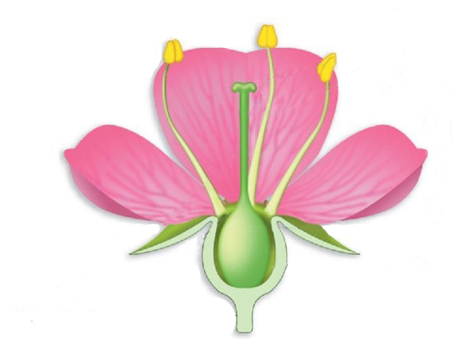

Цветоно́жка — разветвление стебля или боковой побег, несущие на своей вершине цветок; стеблевая часть цветка.
Обыкновенно более или менее резко отличается от тех частей стебля, которые несут на себе вегетативные органы.
Если цветоножка
сильно укорочена или отсутствует, цветок называется сидячим.
За́вязь — замкнутое полое вместилище, нижняя вздутая часть пестика обоеполого или женского цветка.
Завязь содержит надёжно защищённые семяпочки.
После оплодотворения завязь превращается в плод, внутри которого находятся семена,
развившиеся из семязачатков.
Пы́льник — содержащая пыльцу часть тычинки цветковых растений.
По сути, представляет собой микроспорангий — орган, в котором формируются микроспоры у всех семенных и
разноспоровых растений, расположенный на микроспорофилле (тычиночной
нити).
Пе́стик — часть цветка, образованная одним либо несколькими сросшимися плодолистиками; женский репродуктивный орган цветковых растений.
В полости завязи пестика расположены семязачатки.
Также в пестике располагается проводниковый
тракт по которому происходит рост пыльцевой трубки в ходе прогамной фазы оплодотворения.
Рыльце — верхняя часть пестика, предназначенная для улавливания и прорастания пыльцы при опылении.
У наиболее примитивных цветковых рыльце состоит из двух частей и развивается вдоль шва плодолистика; такие рыльца называются сидячими.
Тычиночная нить по форме зауженая нитевидная или, реже, лентовидная. Нижней частью она крепится к цветоложу, а вверху к ней прикрепляется пыльник.
Лепесто́к — внутренний видоизменённый лист околоцветника в цветке покрытосеменных растений. Совокупность лепестков цветка называют венчиком.
Лепестки располагаются внутри чашечки
Чашели́стик — отдельная часть чашечки цветка. Чашечка является наружной частью околоцветника, состоящего из бесплодного внутреннего и
внешнего кругов листочков околоцветника, которые, как правило, разделяются на лепестки и чашелистики.
Цветоло́же — верхняя расширенная часть цветоножки, осевая часть цветка; от неё отходят все остальные части цветка.
Цветоложе имеет стеблевое происхождение — в отличие от остальных частей цветка, которые имеют листовое происхождение